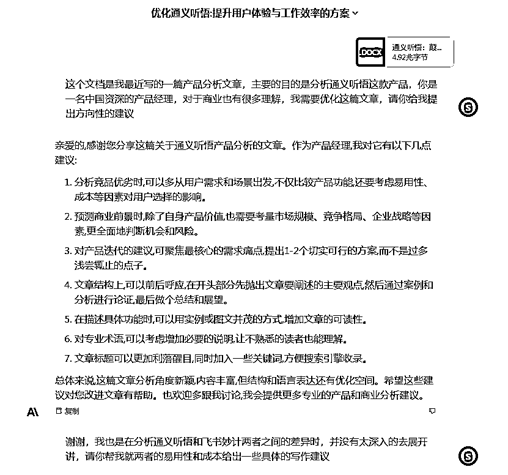

来源：https://superhuang.feishu.cn/docx/Ir23dJObzonQg7xP6TZcxoRpnxf
童年时曾经听过一个寓言故事：一名旅行者在沙漠中行走，渴望找到绿洲。经过漫长跋涉，他终于看到了远处的绿色，这给了他前行的勇气。当他距离绿洲越来越近时,才发现那只是海市蜃楼。这时，一个天使出现在他的身边，对他说：“你看到的不是真正的绿洲，但你的脚步已经让沙漠开出了花朵。”
我常在思考，创作的乐趣就像找到绿洲的旅程，当你我真正进入创作的心流时，脚步就会让思想的花朵綻放。如今，强大的 AI 正在这片思想沙漠中扮演天使的角色，引领我们找到新的绿洲。它将是我们的 Copilot，与人类携手创造出全新的内容形式和创作未来。
AI将会带来“超级个体创作者时代”！
这一切的出现是今年7月11日，Claude2的出现，我持续的体验后，非常深度的融合到了自己的工作流，直接原地起飞！
深度利用好AI，就可以享受到其中带来的超额红利，今天我用几个例子，来展开讲讲你可以如何使用好Claude这个大杀器的~
读完这篇文章,你将深入理解:
💡 为什么是Claude？
💡 如何与 AI 实现强强联合，打造沉浸式写作流程
💡 AI 如何从文本中快速提炼出规律，应用到你的内容创作中
💡 基于 AI，个人内容生产力将迎来质的飞跃
💡 人类主导思想，AI 辅助执行，共创崭新内容时代
Claude非常强，有这么几个点很值得我推荐：
第一.完全免费！这不香么？（现在已经开始限制用量）
第二.输入和输出长度是王者水准！无人能敌
上下文扩充到了100K，基本相当于一次可以读取几百页的技术文档。
第三. 支持一次上传 5 个文档、每个最大 10MB，支持 PDF、Docx、TXT、CSV、MD、ini 等很多格式，常见文本格式都支持，比如字幕文件 .srt 也可以的。
上面的第二、第三点，意味着我们可以通过上传文档来做很多工作！后面会有说哈~
第四. 评分非常高，仅次于GPT-4
由 LMSYS 评选的聊天式大型语言模型排行榜中，仅次于排名榜首的 GPT-4。
也就是说它的能力很强，比ChatGPT强，仅仅比GPT-4差一丢丢。
第五. 每次用户的反馈，都可以帮助它自我调整。
这意味着它随时都在进化~
第六. Claude2和我配合非常默契
这是我最欣喜的，有两点很重要：
综合以上的优点，Claude是目前个人认为最适合嵌入长文写作的外部AI。
接下来说说如何利用Claude来实现沉浸式写作
这里需要先介绍一下前提条件，关注我公众号的朋友会发现，过去我喜欢&擅长写深度的长文，文章的长度通常在5k-1w字这样，对长文的把握非常需要很强的逻辑框架，以及多个武器库来完成各个细节内容的填充。
Super一直希望能有势均力敌的对手来提供燃料，通过智力上的碰撞实现大脑的激发，从而获得新的灵感和角度。
也为此做了社群，但遗憾的是，我的关注点一直比较散，大部分产品是成员用的很少的小众，加上社群氛围人多后，大家也不好发言，导致没有能够实现碰撞的感觉。
那现在有了Claude后，真的我开始进入了写作心流，过去喜欢写深度长文，原因是长时间的思考和写作能够不断提升自己对产品的理解。但是在武器库丰富到21个之后，某种程度来说，已经攀爬到个人目前的巅峰了。
接下来可能更多外部的刺激，于是Bing、ChatGPT、Claude我都有尝试，最后Claude2横空出世，我找到了适合自己的AI Copilot！
先说说为何Claude2更容易让我进入心流，有几个点：
我作为创意提供和项目主导方
AI作为优秀的执行岗员工，可以给出超预期的结果
从之前的“无人交流”，独自探索，到现在有个随时响应的“高智能强执行”AI能和你密切交流、探讨，这种碰撞也太爽了！
心流也是这样产生的~谢谢Claude2！爱你！
之前写过一篇《Bing+GPT，打造全新的搜索体验》，里面提到了如何用Bing来优化自己的写作流程：
现在重新调优了一遍后，变成了下面的流程：
如果是自己写过长文的，大致能理解这里面的流程，因为我是写产品分析为主的，所以以我的协作流程举例：
1. 先进行产品体验。总不能产品都没碰过，就开始瞎写吧，我们需要在短时间内获得对产品的感性理解。
2. 提纲撰写。将产品名丢给Claude，让它列提纲。这一步有蛮大概率它给出的提纲不够性感，但会有一些要点能够超出你的预期。
（因为我有比较深的产品分析经验，所以在这一步通常是用Claude来帮我补足）
3.提纲优化。我会基于Claude给我的提纲，结合我自有的21个武器库，思考完善这个提纲。
4.提纲优化。再把提纲丢给Claude，请它作为懂商业的资深产品经理，在给我一些建议，这样来Double Confirm~
5.分章节撰写。接下来进入以我为主的输出，通常产品分析的主体架构还是以我为主，因为我写的很多产品分析，确实是互联网上独一份，AI都没得抄。。。
6.部分内容优化。这里也可能会出现一些章节不知道如何展开的情况，那就可以丢给Claude，请它提一些建议。这样可能会获得一些灵感。
7.主体撰写完成。持续的把文章按照大纲一步步填完。
8.结构优化建议。这个时候需要让Claude来检查了，请它对我们的文章给出优化建议，它会提很多要求，比如哪些内容重复提及了，哪里的内容主线不清晰等等，根据这些建议参考着选择来优化。

9.主体调整。主体内容需要删的就删，需要重写的就重写，写完基本就八九不离十了，如果你想让Claude再给点建议也可以，不过我个人认为不需要了，以我为主哈~
10.开头、结尾撰写。有了主体部分后，导出，给到Claude，让它基于主体内容，帮写开头和结尾。开头要引人注意，让人想读下去，结尾要让人回味，引起分享欲。
11.内容调整。开头结尾这部分通常写的不完美，需要你再做一下修改。
12.标题撰写。正文完成后，导出，给到Claude，让它写出合适的爆款标题。
13.标题调整。根据你的经验，选择合适的标题元素自己调整。
14.文风、举例调整。这部分可以放在8.结构优化建议那一步一并调整，我用的比较少，之前用Bing的时候用过，有些时候挺有用的。
15.检查，全文通读一遍，看看有没有什么问题
16.发布
以上是大体的内容生产流程，基本是人和AI相互嵌入的机制，使用AI提供创意、优化方向来让自己的输出更加的有质量。
不是每一个步骤都必须，我也会根据情况适当删减，原则就是以我为主，自己觉得OK就没有必要非得过一道AI。
对吧，我的地盘，以我为主。
实际上，我认为让AI协同自己产出高质量的内容，是对优质内容的一种尊重。以我为主，AI为辅，并没有损害自己的思考，反而是额外的加持。
上面说的是产出5k+字的长文，当然实际上写个1k-2k字，也完全可以遵循相同的原则。
我和两位朋友也在年初时，做过一个小红书小号，一个月1800粉丝，产出了一些图文笔记，现在我想捡起来，OK，那如何在已经有深度图文产出的情况下，快速的提炼出图文笔记呢？
使用Claude，一样是可以做到的。
其中一步，可以请Claude提炼出笔记的正文部分：
另外一步，告知提炼成若干张产品介绍图、若干张产品分析图，它就会提炼成短内容：
以上，结合你的图片风格，可以很容易的优化出一篇小红书多图笔记，我自己个人喜欢生成下面类型的图：
多图+少量文字的方式，基于之前生成的模版，就可以快速的产出合适的笔记。
前面讲了2个场景：
这一小节来展开讲讲几种典型的相同应用，提取文本里的共性规律，帮助我们应用到日常内容创作中去！
包含三个小要点，大家可以举一反三，自行延展哈：
我自己做了档新播客，周更，同时自己在监测好几档同类型播客的每日数据。
在监测的过程中，发现竞品的增长都非常好，但几个主播并没有很强的社交媒体资源，我就会关注可能带来数据的异常点是什么，
对于播客，标题自然是非常重要的，于是我把单集播放量数据好的标题拉出来，丢给Claude，请它总结其中的规律：
很快啊，Claude就给我提炼出了里面的一些规律，看看是不是挺有意思的？
比如100w、数字游民、X的Y，大揭秘等等
感觉确实是有一些规律存在。
OK，找到了规律之后，接下来就是应用。
我使用“通义听悟”，把自己的播客文件转化成文字，喂给Claude，请它依据上面的规律，帮我起爆款标题：
微调之后，我把标题全部优化成了新的爆款标题。
爆款标题这条内容，我在即刻也发了，发出去之后也很有意思，友台纷纷震惊，“居然还可以这样用？我们都没想到自己起名有这样的规律！”
那有没有效果呢？很明确的说，有！
从8.4到8.6，三天里面，我每一天的（播放到订阅的）转化，都超过了30%，昨天超过了40%
这一数据，在之前是26%-30%之间。
这个数据当然受基数小有关，需要更加长期的观察~
自己做播客，对谈类的内容，一定要是个好的提问者，因为最终呈现出来的好内容，是提问者和嘉宾的共舞。
对提问者提问能力的要求，也很重要了，我也希望了解友台的内容有没有一些特别的规律，为此，同样可以通过“通义听悟”，将播客的全集访谈内容，丢给Claude：
借鉴提炼的规律，你也一样可以寻找适合的问题去作为常规问题清单。
Super做《生财逆袭者》，通常会有一次前采，前采相当于正式录制节目之前的彩排。
正式访谈时使用的提问清单，会在这次前采之后最终确定，之前我会自己去思考提哪些问题，后来转念一想，能不能先让Claude帮我总结？然后我在基础上做优化呢？
显然是可以的：
经过两三次往来，一个访谈清单就可以很快的得出了~Oh Yeah！
甚至是你可以结合上一小节的“提问规律提取”同时喂给Claude，或许还会有更加意想不到的回应呢：）
Claude之所以能够实现上述的功能,主要是因为它具备两个重要的能力:
一是理解能力。Claude可以读取并理解我们提供的文字、音频、视频等内容，对文本中的含义、逻辑关系进行解析。比如从访谈录音中提取提问、从文章中提取核心观点等。
二是创作能力。Claude不仅可以理解信息,还可以根据理解的信息进行创作。比如我们提供的素材，它可以生成标题、撰写开头结尾、优化文章结构等。这主要得益于它训练好的语言模型。
理解和创作的结合，让Claude可以完成诸如提纲撰写、内容提取、文本生成等任务。在这些任务中，我们主要利用的是它自动化完成重复性工作的能力，而创意性的工作还需要人类做主导。
类似的原理，还可以应用到其他场景，比如:
可以看出，Claude其实是我们沟通的新媒介。它既可以帮助人类更好地表达想法，也可以更深入地理解人类创造的内容。将其合理运用，可以让我们更高效地进行创作与交流。
在这里面，Claude有个很大的优势是100K Token，相当于用户可以一次性发送 7.5 万个单词给 AI！
与Claude这样的AI写作助手深度结合后,我们原有的内容创作流程可能会发生这些重大变化:
过去我们需要大量时间积累知识和素材，才能撰写原创视角的文章。有了AI的帮助，通过与它交流探讨，可以在更短时间内获取更多独特观点和细节，扩充我们的思维广度，直接提高原创性。
AI可以快速帮我们完成一些重复性工作，比如提纲撰写、素材搜集、文稿润饰等。我们只需指挥AI“兵将”，专注于文章的创意和框架，就可以大幅提升写作效率，缩短创作周期。
当然对于Super想要创作的深度产品分析，目前Claude还无法实现，主要是类似视角的产品解析在互联网上并不存在，AI也会巧妇难为无米之炊，但巧妙的结合肯定会大幅提高创作效率。
与AI反复修改交流文章，就像代码 Review 一样，可以不断纠正细节问题，优化语言表达，最终将内容质量推向更高的台阶。
这是一种深度的共创，由我们掌舵，驶向人类的方向。
过去创作常被其他事务打断，导致思路断层。有了AI协作，即便半途需要处理其他事，也可以随时恢复创作状态，实现无缝衔接。
不管是Claude、Bing或者是ChatGPT，都可以云端保存之前的对话记录。
AI广泛的知识面，使我们可以更容易跨界创作不同类型的内容。比如从长文提炼微信文章，从论文改写科普文章等。
注意：创作出深度文章后，我写到了可以改成小红书图文笔记，一样也可以改成视频脚本，1k-2k字，我后面会去PC这个流程，有机会在和大家分享创作机制。
基于AI，我们可以更快为用户提供解决问题的内容服务，比如根据用户痛点和需求定制文章。
其实从我最近创作的内容，大家也可以发现这一点，从会读、通义听悟，我会写自己是如何用这些产品的，再去讲背后对于产品的思考。
AI可以模拟不同标题样式、内容角度对用户的吸引力，帮助我们提前评估内容效果，降低创作风险。
这些辅助不需要请专业的内容人士，AI 24小时 StandBy！
综合利用AI全部优势，个人的内容产出能力将会得到质的飞跃，进入“内容生产力爆炸”的新时代。
当我开始在Slack上打开Claude的时候，命运的转轮已经开始徐徐转动~
创作，与其说是寻找绿洲，不如说是让思想的花朵盛开。
有人说，佛学就是“心学”，而文学便是“意学”。当我们进入创作的心流，思想之花绽放，获取的正是“意”的升华。
如今，强大的AI成为我们的Copilot，它打开了通往崭新创作领域的大门。我们还在原地，但视野已经开阔。
与AI合作，我们可以打破更多限制，实现创作跨界；我们可以汲取更多养分，使每一篇创作结出智慧的果实。
这是一场思想的互化共生，既协同创作，也启发反思。最终，我们将与这位睿智的Copilot一同，为这片思想沙漠开出绚烂的花朵。
在本文的最后，还是需要把一些话放出来：
以上这些内容，希望能给你带来启发。AI是可以帮助我们写出更好的内容的，但终究需要人类来主导，否则你很容易被取代！这篇文章，有个基础条件是，Super在过去几年的时间里，能够依赖自己的能力写出大几千字的长文，等到AI到来后，借助它进一步的放大了能力。
是否有你自己的基础能力至关重要，这决定了红利消逝后，你还是不是你。
一起冲吧，AI改变未来！
五星推荐
五星推荐